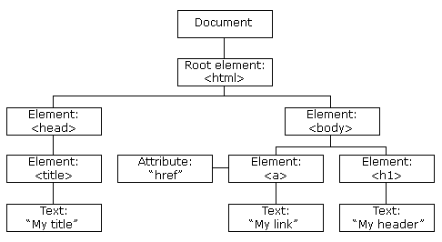

DOM - Document Object Model
Po načtení stránky se vytvoří DOM strom, který obsahuje elementy z naší stránky
V tomto stromu je kořenem element html
Na tento kořen odkazují dvě větve - head a body
Následně se tyto části rozdělují podle jejich obsahu
Pomocí DOM můžeme několit hromadu věcí:
- Měnit elementy stránky a jejich atributy
- Měnit CSS styly stránky
- Odebírat elementy
- Přidávat elementy
- Zpracovávat různé události (eventy)
- Vytvářet různé nové eventy
PS: pro práci s DOM je dobré dávat JS úplně na konec dokumentu před uzavírající tag body :)
DOM funkce
- document.getElementById('naseId') - najde element s id="naseId"
- document.getElementsByTagName('li') - najde všechny elementy li
- document.getElementsByClassName('mojeTrida') - najde všechny elementy s class="mojeTrida"
- element.innerHTML = "<p>ahoj</p>"; - mění vnitřní HTML elementu - v naší ukázce by se přidal do elementu odstavec
- element.innerText = "<p>ahoj</p>"; - mění vnitřní text elementu - v naší ukázce by se přidal do elementu jenom text a tag p by šel vidět
- element.attribute = hodnota; - pomocí této syntaxe lze měnit různé atributy na jinou hodnotu
- element.style.vlastnost = hodnota; - pomocí této syntaxe lze měnit CSS pro element
- document.createElement('div') - vytvoří div element
- document.removeChild(element) - odebere element z dokumentu
- document.appendChild(element) - přidá element do dokumentu
- document.replaceChild(novy, stary) - nahradí element
- document.write() - ruce pryč od této zrůdnosti - používejte innerHTML nebo ty funkce nad :)
DOM eventy
- element.onclick = () => exp; - když se klikne na element, tak nastane nějaká funkce (ps: tyto eventy pište přímo do JS souboru, nepište to do HTML tagů nebo k vám příjdu na web a začnu dělat brikule :) pss: to hodnocení tam zůstává)
- window.onload = () => exp; - když se okno načtě, tak nastane nějaká funkce
- element.onchange = () => exp; - když se změní obsah elementu, tak nastave nějaká funkce
- element.onmouseover = () => exp; - když se na element najede myší, tak nastave nějaká funkce
- element.onmouseout = () => exp; - když se z elementu odjede myší, tak nastave nějaká funkce
- element.onmousedown = () => exp; - když se na elementu drží tlačítko myši, tak nastave nějaká funkce
- element.onmouseup = () => exp; - když se na elementu pustí tlačítko myši, tak nastave nějaká funkce
eventListener
Pro přidání eventListeneru na element používáme funkci addEventListener()
Pro odebrání eventListeneru z elemente používáme funkci removeEventListener()
Syntax:
element.addEventListener(event, funkce)
Editor
Pro živou ukázku je CSS a JavaScript vepsaný přímo v dokumentu - v praxi tyto soubory vždy oddělujte do externích souborů
<!DOCTYPE html>
<html>
<head>
</head>
<body>
<script>
let array = ["Car", "Phone", "House"];
array.forEach((item) => console.log(item));
</script>
</body>
</html>
Page
PS: Logy se zobrazují v konzoli - F12 - console